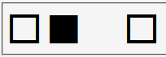
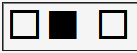

letter-spacingプロパティをem単位の値で指定すると、当該要素や親要素の文字サイズを無視してbody要素の文字サイズに対する値を算出し、それを適用してしまう。
<div style="font-size:3em;">□ <span style="letter-spacing:1em;">■□</span></div>
2文字目の「■」と3文字目の「□」の間には1文字分の隙間が空くはずです。
N7.02での表示（標準モード）
WinIE6.0での表示（標準モード）
WinIE5.5、WinIE6.0標準モード、WinIE6.0互換モードで不具合の発生が確認されました。